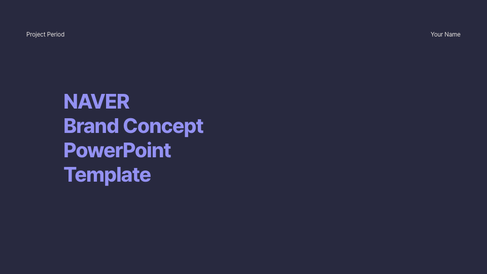
브랜드 컨셉 표지
왼쪽 4행 영문 제목과 상단 양끝 메타데이터 · 왼쪽 4행 영문 제목과 상단 양끝 메타데이터
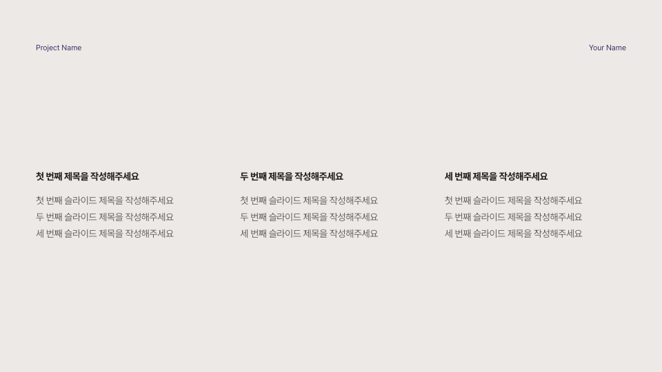
3열 목차
상단 프로젝트명과 발표자, 중앙의 3개 목차 열 · 상단 프로젝트명과 발표자, 중앙의 3개 목차 열
· 화면 출처 ↗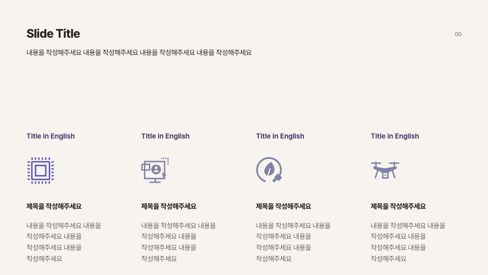
4열 기술 소개
제목 아래 넓은 여백과 칩·화면·친환경·드론 아이콘 4열 · 제목 아래 넓은 여백과 칩·화면·친환경·드론 아이콘 4열
· 화면 출처 ↗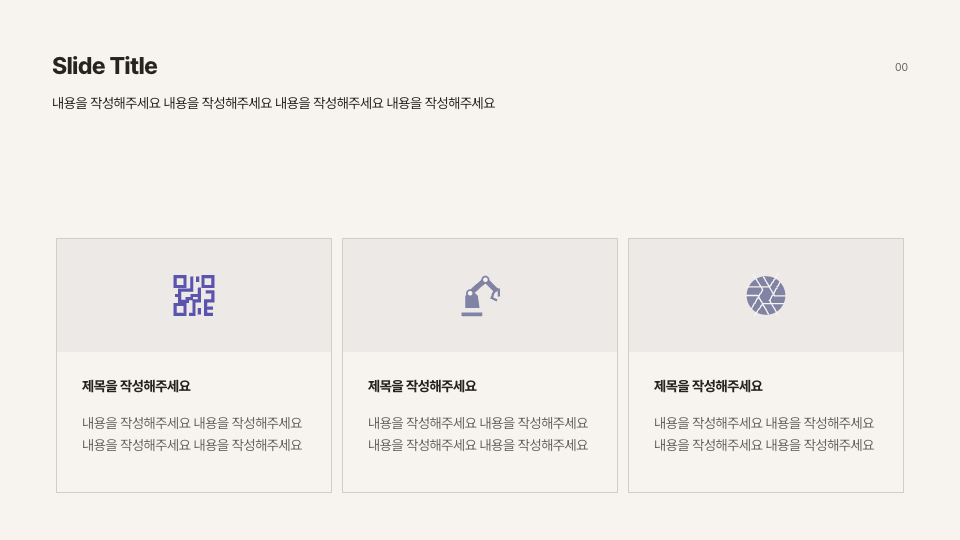
3열 기능 카드
상단 아이콘 면과 하단 설명으로 나뉜 동일 크기 카드 3개 · 상단 아이콘 면과 하단 설명으로 나뉜 동일 크기 카드 3개
· 화면 출처 ↗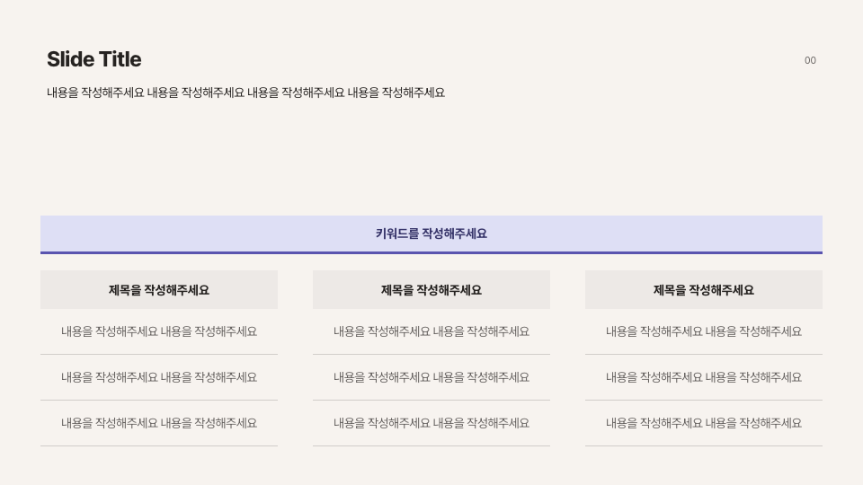
키워드 비교표
전폭 키워드 띠 아래 3열 제목과 각 3행 내용 · 전폭 키워드 띠 아래 3열 제목과 각 3행 내용
· 화면 출처 ↗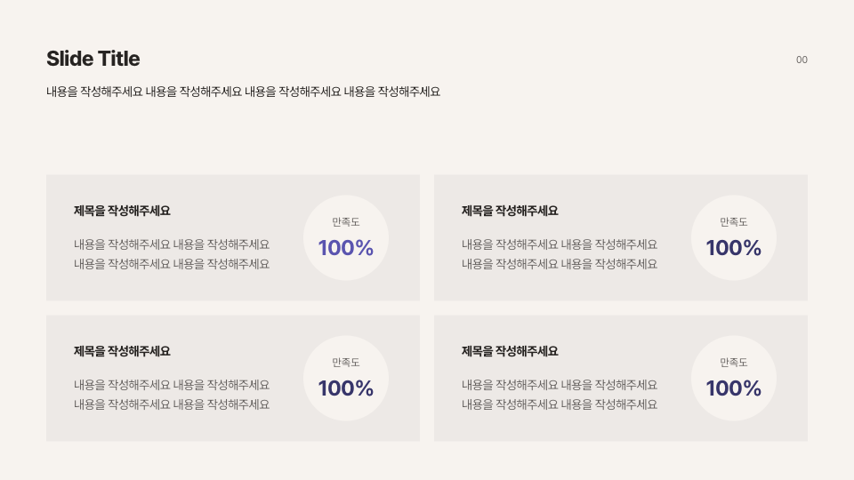
만족도 KPI 카드
본문과 원형 100% 배지를 묶은 가로 카드 2×2 · 본문과 원형 100% 배지를 묶은 가로 카드 2×2
· 화면 출처 ↗중앙 메시지 카드
넓은 중립 배경 중앙의 체크 배지·메시지·Discover 버튼 · 넓은 중립 배경 중앙의 체크 배지·메시지·Discover 버튼
· 화면 출처 ↗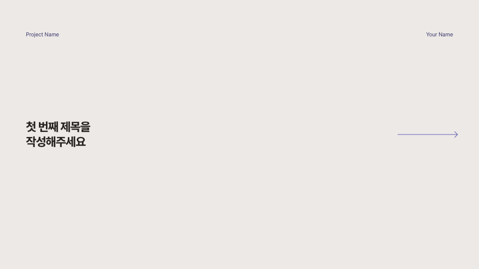
화살표 섹션 구분
왼쪽 두 줄 섹션 제목과 오른쪽의 가는 진행 화살표 · 왼쪽 두 줄 섹션 제목과 오른쪽의 가는 진행 화살표
· 화면 출처 ↗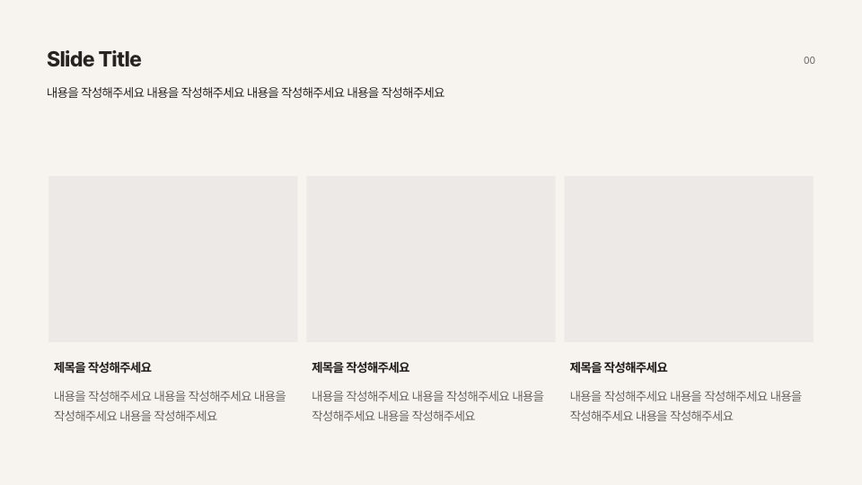
3열 이미지 설명
가로로 나란한 이미지 자리 3개와 아래의 제목·설명 · 가로로 나란한 이미지 자리 3개와 아래의 제목·설명
· 화면 출처 ↗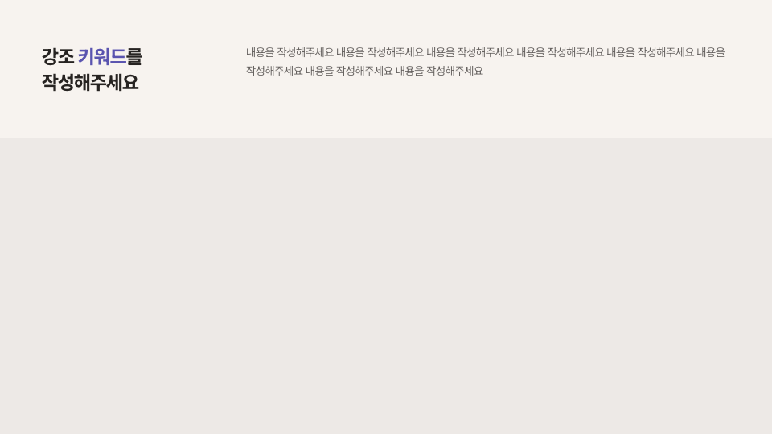
상단 메시지와 전폭 이미지
상단 왼쪽 2행 강조 제목·오른쪽 설명과 하단 전폭 이미지 자리 · 상단 왼쪽 2행 강조 제목·오른쪽 설명과 하단 전폭 이미지 자리
· 화면 출처 ↗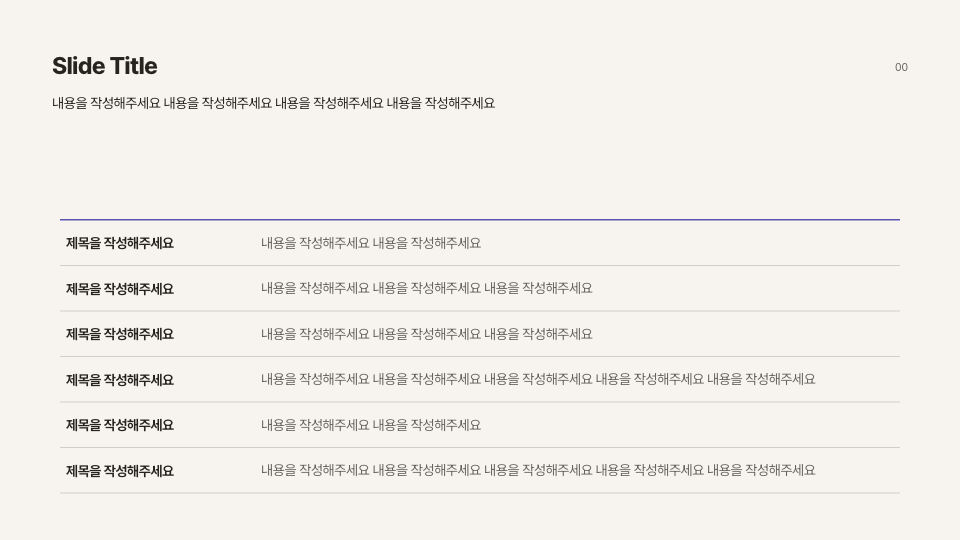
6행 설명 표
제목 아래 넓은 여백과 2열·6행의 가는 선 설명 표 · 제목 아래 넓은 여백과 2열·6행의 가는 선 설명 표
· 화면 출처 ↗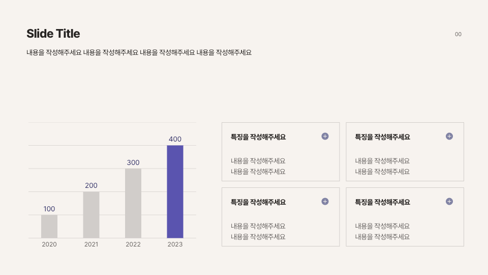
상승 차트와 특징 카드
좌측 4개 연도 상승 막대와 우측 2×2 특징 카드 · 좌측 4개 연도 상승 막대와 우측 2×2 특징 카드
· 화면 출처 ↗